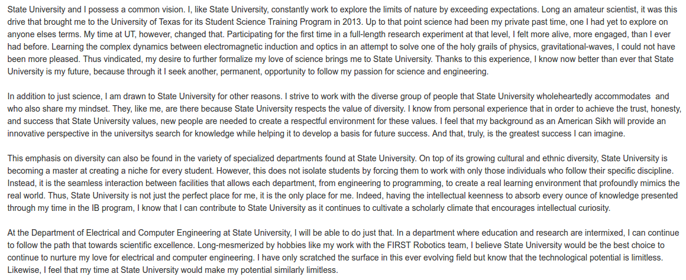
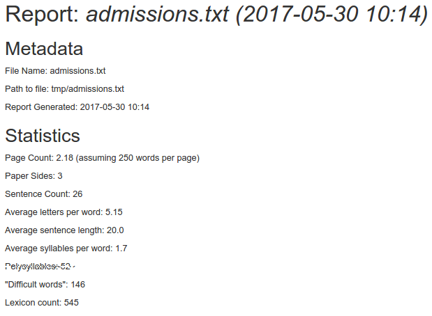
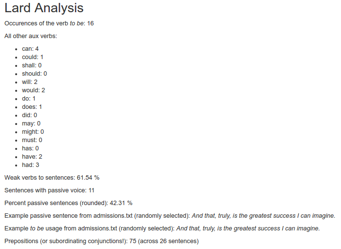
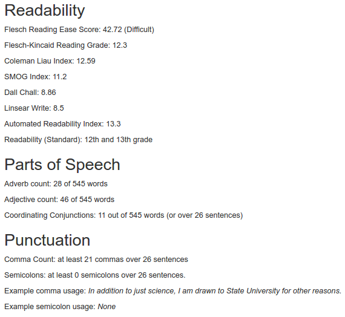

What is all this, then?
This tool is intended to encourage substantive revision.
When a user uploads a nonfiction document, a report is produced.
The report includes an array of information based on an algorithmic analysis of the prose.
The analysis provides a non-presecriptive, statistical overview of the document, intended to support writing instructors as they guide students through the substantive revision stage of the writing process.
The report may be used as supporting data driving the creation of individual written expression and mechanics goals and objectives to focus on in class and to document in an IEP, for example.
Additionally, by uploading final submission drafts of students' work, the instructor may use the reports to track progress toward individualized goals and objectives over time.
The majority of the report is intended to support an instructor's decision making regarding how to guide a student toward successful revision -- no concrete suggestions are provided.
In the conclusion of the report, however, some more concrete support may be provided: for example, cliches may be identified and changes recommended.



